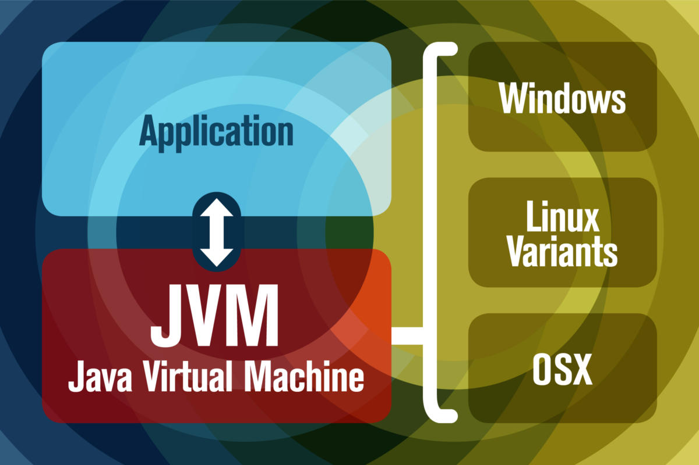
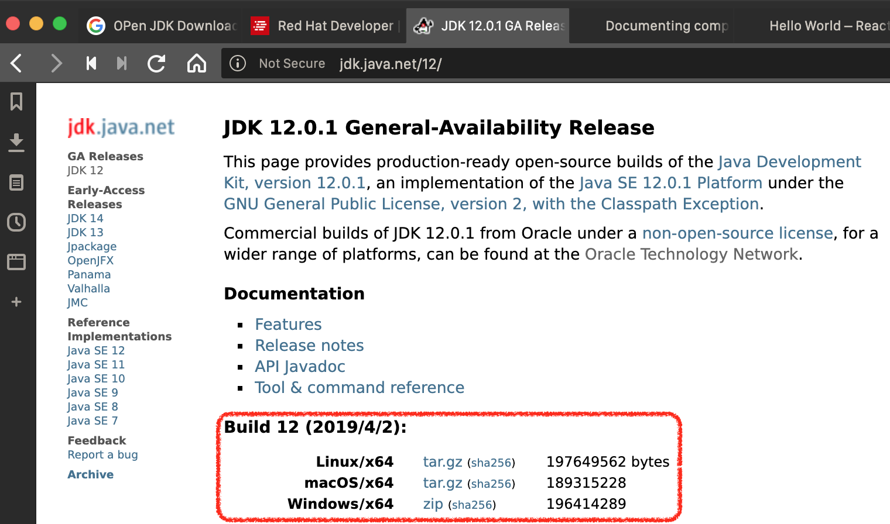

Sectioin 1.1 JDK安裝教學
Java程式開發所需系統環境設定
要撰寫Java程式最重要的就是準備一個可以編譯與執行Java程式的環境。因此要能寫一個Java程式基本要安裝 Java JDK及安裝程式編輯器。JDK是指 Java Development Kit是編譯Java程式的主要工具集。首先使用Google查詢 “Java JDK 1.12 download”，連結到下載頁面時會像圖2-1一樣必須點擊「Accept License Agreement 」才會出現可以下載的連結，各位可以自己使用的作業系統選擇相對應的安裝檔。
 Figure 2-1: 下載 JDK 1.12
Figure 2-1: 下載 JDK 1.12

Figure 2-2: High-level view of the JVM (source: https://www.javaworld.com/article/3272244/what-is-the-jvm-introducing-the-java-virtual-machine.html)
當然你也可以下載 ** Open JDK ** 下來用。Oracle JDK 與 Open JDK 差別在於，使用 Oracle JDK 在連線 https 時因為沒有解讀憑證的套件，因此沒辦法順利讀取資料，但是 Open JDK 就不會有這樣的問題。 參考資訊 1 (English) 參考資訊 2 (中文)

Figure 2-3: Open JDK 12 下載畫面
點擊安裝執行檔時Windows作業系統會問你是否要安裝，請點擊「是」 (請見圖2-2)。接著會出現開始安裝的提示(見Fig. 2-4)。